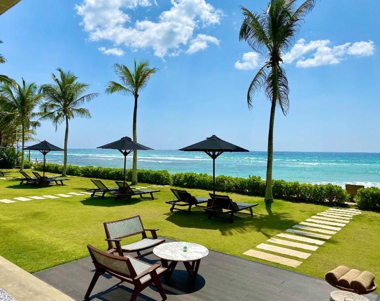
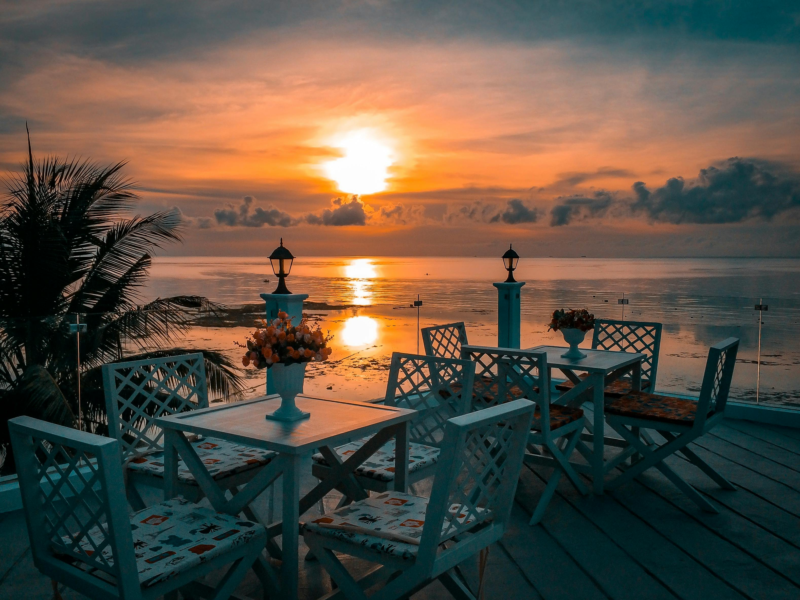
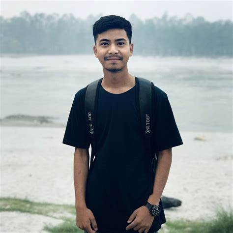

Welcome to the enchanting realm of Secret Mirage, a boutique hotel nestled in the heart of Sri Lanka. Our About Page serves as your key to unlocking the secrets woven into the fabric of this extraordinary retreat. Each room and suite within the hotel exudes a unique blend of contemporary elegance and local influences, providing a luxurious sanctuary for your stay. Immerse yourself in a culinary journey curated by our skilled artisans, where flavors harmonize to create an unforgettable dining experience.
Hotel Secret Mirage began as a vision to create a sanctuary where guests could escape the hustle and bustle of everyday life. Established in 2018, the hotel was founded by jhon de silva, a visionary entrepreneur with a passion for hospitality and a deep appreciation for nature. Nestled in a secluded area, the location was carefully chosen for its breathtaking views and serene surroundings. What started as a small, family-run inn has grown into a luxurious retreat, offering world-class amenities while maintaining the charm and warmth that guests have come to love. Over the years, Hotel Secret Mirage has evolved, blending modern comforts with timeless elegance. The architecture reflects a harmonious mix of traditional design and contemporary style, paying homage to the rich cultural heritage of the region. Each corner of the hotel tells a story, from the handcrafted furniture to the curated art collection that celebrates the essence of the destination. From humble beginnings, we have welcomed guests from all corners of the globe, providing them with a unique and memorable experience. Our commitment to excellence and personalized service has made Hotel Secret Mirage a beloved destination for those seeking tranquility and luxury. Today, Hotel Secret Mirage stands as a testament to our enduring values: hospitality, quality, and an unwavering dedication to making every guest's stay unforgettable. As we look to the future, we remain inspired by our past, continually striving to create moments that resonate with our guests long after they leave.



"Choosing Secret Mirage for our getaway was an absolute delight. The attention to detail in the rooms and the breathtaking views from our balcony surpassed our expectations. The staff's warmth and attentiveness made our stay truly memorable. We can't wait to return to this hidden gem!" - prasanna wanninayaka
"From the moment we arrived, we were captivated by the charm of Secret Mirage. The poolside paradise, the exquisite rooms, and the attention to every detail made our stay magical. The memories we created here will last a lifetime. Highly recommend!" - michell de silva